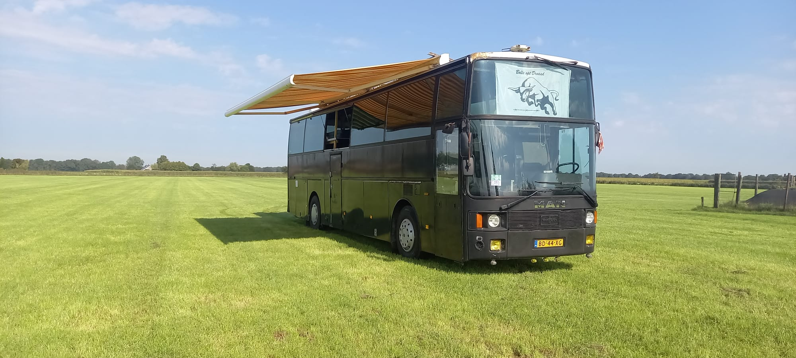
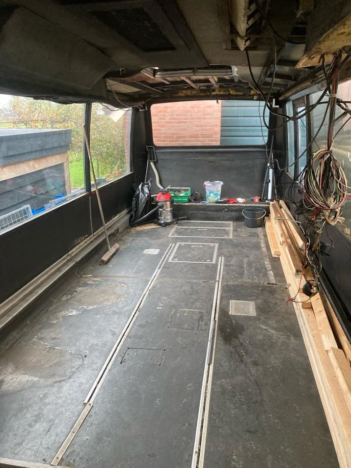
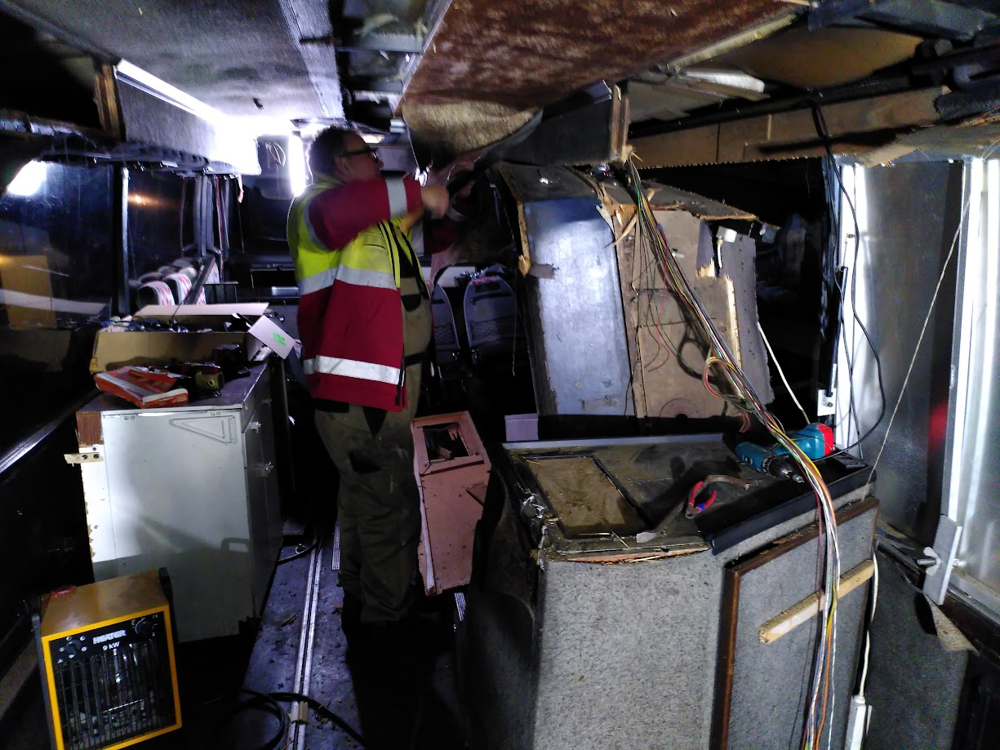

1 - Waarom ik een bus heb gekocht
1 september 2023Voordat ik jullie meeneem in mijn project, zal ik nog even kort toelichten waarom ik eigenlijk een bus heb gekocht. Er is namelijk nog wel een en ander aan vooraf gegaan.
Woningmarkt
Gezien de woningmarkt in Nederland momenteel ronduit belachelijk is, is het kopen van een woning erg lastig. Als alleenstaande met een studieschuld is het gewoon onmogelijk. Het huren van een woning is ook geen gesneden koek. Als je geluk hebt kun je binnen redelijke tijd aanspraak maken op een sociale huurwoning. De andere optie is de particuliere huursector, waar je gewoon uitgekleed wordt. Het geld zie je bovendien nooit weer, zoals dat (deels) wel bij een koophuis het geval is.
Wonen op een schip
Ik houd graag van out of the box denken en dacht: zijn er geen andere opties? Ik ken mensen die (deels) leven op een zeilboot en dat inspireerde me. Ik begon me te verdiepen in het wonen op een schip. Ik heb gekeken naar woonboten, zeilboten en motorboten. Ik zag het ergens wel voor me, maar er zitten een aantal nadelen aan het kopen van en het wonen op een schip. Zo ben je bijvoorbeeld minder mobiel dan een wegvoertuig. Daarnaast heb je te maken met relatief veel onderhoud, waarvoor het schip van tijd tot tijd uit water moet. En dat kost geld. Maar wat het plan definitief in de doofpot stopte, is het regelen van een vaste ligplek. Je bent afhankelijk van een vaste ligplaats en deze zijn schaars en duur (rond de stad). Dit maakt het plan voor mij oninteressant.
Foto’s van de motorklipperaak "Metamorfose"
Hieronder een aantal foto's van de motorklipperaak "Metamorfose", die ik heb bekeken en waar ik een stukje in mocht varen van de eigenaar.


Wonen in een vrachtwagen
Na de oriëntatie op schepen begon ik me te oriënteren op vrachtwagens. Daar zitten een aantal voordelen aan ten opzichte van een schip. Zo zijn ze een stuk goedkoper, ben je niet afhankelijk van ligplaatsen en ben je een stuk mobieler. Daarnaast heeft een vrachtwagen een recht-toe-recht-aan laadbak die je eenvoudig kunt isoleren en inrichten. Ook zijn alle kanten goed bereikbaar en dat maakt het onderhoud makkelijker. Ik was al een beetje aan het spelen met een indeling in mijn CAD programma:

Maar ik liep steeds tegen dezelfde beperking aan: ruimtegebrek. Ruimtegebrek? Bij een vrachtwagen? zul je misschien denken. Maar mijn plan is niet om er af en toe mee op vakantie te gaan. Mijn plan is om er in te gaan wonen. En als je ergens in wil wonen, dan moet je je niet opgesloten voelen. De één heeft minder ruimte nodig dan de ander, maar ik wist dat ik hiermee niet tevreden zou zijn. Daarbij speelt de cabine van de vrachtwagen een grote rol. Deze is gescheiden van de laadbak, wat ten koste gaat van de ruimte. Een doorgang van de cabine naar de laadbak maken zou misschien kunnen, maar dit zou wel een technische uitdaging worden. Was er maar een voertuig waarbij het interieur uit één grote ruimte bestaat....
2 - Het begin: de Marktplaatsadvertentie
17 oktober 2023Het begin... de Marktplaatsadvertentie. Ik kwam bij toeval een advertentie tegen waarin een bus werd aangeboden. Ik dacht dat is grappig... Het ging om een Van Hool T815 touringcar/bus uit 1982. Zie hier de foto's van de Marktplaatsadvertentie:
De buitenkant
De binnenkant

3 - De bus bekijken
21 oktober 2023Na contact met de eigenaar reisde ik met paps naar Haarle (bij Raalte) af om de bus te bekijken. Op het adres troffen we een boerenbedrijf aan. De eigenaar bleek een jongeman te zijn die de bus met zijn vriendengroep heeft gekocht om ermee naar de Zwarte Cross te gaan. Na 2 jaar vonden ze het mooi geweest en met geen andere plannen voor de bus, besloten ze hem te verkopen.
Wat opviel was dat de bus voor zijn leeftijd technisch niet heel slecht oogde. De buitenkant is gemaakt van aluminium, dus heb je daar minimaal te maken met corrosie. Binnen leek het ook redelijk netjes en origineel, maar de jongens hadden er een "indrukwekkende" constructie van stapelbedden ingebouwd met CLS en oude metalen bedbodems. Deze constructie was vakkundig overal en nergens aan de bus vastgeschroefd met spaanplaatschroeven. In alle soorten en maten.
De onderkant kon ik niet heel goed beoordelen, daarvoor zou je hem op de brug moeten zetten. Maar je gaat toch ook een beetje af op de algemene indruk die je krijgt. Bovendien was het Belgische Van Hool een topmerk onder de bussen- en opleggerfabrikanten, dus dat voelde goed.
Ik heb die dag geen foto's gemaakt. We hebben wel een rondje gereden in de bus. Wat rijdt dat fantastisch! Omdat je als bestuurder vóór de voorwielen zit (zie foto), heb je het gevoel alsof je over de weg zweeft. Erg leuk. Verder is de bus natuurlijk lucht geveerd, wat bijdraagt aan een comfortabele rit.

4 - Verkocht!
12 november 2023Na het bekijken van de bus op 21 oktober heb ik bij de eigenaar aangegeven dat ik een paar dagen nodig heb om wat meer informatie over te bus op te zoeken. Onder andere heb ik contact gehad met de fabrikant Van Hool zelf. Zij waren tot mijn grote dank bereid om elektrische schema's voor dit type bus met mij te delen.
Verder heb ik onder andere onderzocht wat de mogelijkheden en regels zijn omtrent campers. Natuurlijk goed om te weten vóór je een touringcar aanschaft.. Ik vond een lijst van vorige eigenaren op het internet, met ook de overschrijvingen en herkeuringen. Hieruit kon ik opmaken dat de bus al tweemaal eerder op camperkenteken heeft gestaan. Goed om te weten.
Al met al kreeg ik er steeds meer vertrouwen in dat dit een kansrijk project is. "Ik ga hem kopen" dacht ik op een bepaald moment. Na een bod van mij en een tegenbod van de verkopende partij kwamen we tot een deal. We spraken ook meteen af: zij halen de matrassen eruit én tanken hem af.
Op zondag 12 november reisde ik met pap en topper Stijn weer naar Haarle. Na het tellen van het geld en het bespreken van de overschrijving (zondag loketten niet open en online overschrijven werkte niet op dat moment), de hand schudden en...:
Nu de bus terugrijden naar huis. Met een maximum van 8 stoelen mag je een bus besturen met een vrachtwagenrijbewijs (vandaar het aantal overgebleven stoelen). Pa heeft een vrachtwagenrijbewijs en kon dus de bus naar huis rijden.


5 - Het sloopwerk
13 november 2023De eerste stap was om alle ouwe meuk en wat niet meer nodig is uit de bus te slopen. Ik had eerst nog niet helemaal bedacht tot hoe ver ik de bus ging strippen, maar al snel besloot ik dat ik de bus geheel ging strippen. Een boel werk, maar zo voorkom je verborgen gebreken en kun je met een schone lei beginnen. Dat voelt gewoon goed.
Tijdens het slopen kwam ik er achter dat het materiaal dat gebruikt werd om het interieur te bouwen ook erg zwaar was. Gezien ik de nieuwe indeling zal bouwen met lichter materiaal dan het originele, resulteert dit ook nog eens in een flinke gewichtsbesparing.
Slopen van de bedbodems
Overzicht
Goed, de bedbodems zijn eruit. Wat hebben we tot zover?
Slopen van het plafond
Hier zijn pa en ik bezig met het slopen van de luchtkanalen. Hieruit stroomde warme of koude lucht naar beneden naar de passagiers. Dit was door de passagiers zelf te regelen. Van Hool had dit goed bekeken. Hierover later meer.
Het grootste gedeelte van het interieur was bekleed met grijs tapijt. Het had zijn beste tijd wel gezien. God mag weten wat er allemaal mee is gebeurd. Het maakte het slopen er soms niet makkelijker op. Wanneer je het losrukte kwam er ook veel stof vrij. Niet zo best voor je longen!
Slopen van de wanden en de vloer
Na het slopen van het plafond waren de wanden en de vloer aan de beurt. Deze zijn deugdelijk geconstrueerd door Van Hool en vergden enige moeite om eruit te slopen. Uit de wanden kwam een heleboel aluminium, goed voor een zakcentje bij de oudijzerboer (meenemen!).
Slopen van het toilet
Na het slopen van het toilet besefte ik ook dat mijn oorspronkelijke plan voor de badkamer niet mogelijk is. Ik wou namelijk een badkamer creëren met de douchecabine, wastafel én het toilet in één ruimte. Hiervoor zou ik de originele toiletruimte moeten verbreden, maar daarbij kom je de ruggengraat van het chassis van de bus tegen. En daar kun (en mag!) je niet de flex in zetten..
ASBEST?
Achterin de bus, waar de achterbank ooit zat, zat een stalen plaat. Ik besloot deze plaat te verwijderen omdat ik het idee had dat achter de plaat loze (en dus benutbare!) ruimte zat. Dat was ook het geval. Ik zette dus de flex erin, maar terwijl ik aan het slijpen was merkte ik dat er een soort witte stof in de lucht vrij kwam. Dat was niet het staal...


Het kwartje viel vrij laat voor mij, maar opeens dacht ik: vezelachtige plaat? Wit? Kuuut, is dit geen asbest? Een second opinion van paps resulteerde in hetzelfde oordeel: asbest. Ik droeg voor het grootste gedeelte wel mijn mondmasker, maar de filters die erop zitten zijn niet helemaal geschikt voor dit soort stoffen, kwam ik achter... Fijn.
Doordat ik een video keek over twee mensen die een stalen schip restaureren (voor de liefhebbers:FlyingConey) wist ik van het bestaan van asbest-testkits. Ik besloot ook zo'n set te bestellen en het vreemde materiaal te testen.
De uitslag van de test kreeg ik een aantal dagen later op de mail (zie foto). "Geen asbest" was de conclusie. Toch voelde ik me nog niet helemaal gerustgesteld. Ik geloofde het eigenlijk niet. Het materiaal lijkt namelijk sprekend op asbest. Ik heb het bedrijf van de test gebeld met de vraag of de uitslag wel klopt. De man aan de telefoon zei: "ja ik ben ook verbaasd want ik dacht ook dat het asbest is". Lekker geruststellend... Hij zou het nog eens navragen. Het antwoord bleef hetzelfde, geen asbest. Nouja dan moeten we daar maar vanuit gaan dan. Waarschijnlijk is het gips. Weer door!

Onder in de bus
Ook onder in de bus (of begane grond?) ben ik druk geweest met slopen.. Ook hier was het doel weer: helemaal strippen. Dit was ontzettend veel en zwaar werk. Veel onderdelen waren geschroefd én vastgekit, waardoor het verwijderen erg lastig was. Maar het is gelukt!
In het linkervak heeft vermoedelijk een apparaat gezeten, omdat er een vierkant gat in de vloer zit en er een uitlaat vandaan loopt. Helemaal achterin stonden 2 gasflessen in een gasbun. Zat er een gasboiler..? Deze bun heb ik er uit gesloopt. Ik maak er later een nieuwe in voor de gasflessen voor het koken.
In het middelste vak ligt de vuilwatertank en zat het opvangbakje voor de afvalgaten die ik eerder benoemd heb.
Het rechtervak was onderverdeeld in twee kleinere vakken. Het kleine vakje links was voor bergruimte. Het grotere vak bood een slaapplaats voor de 2e bestuurder! Zie ook het raampje in het luik. Tegenover het toilet zat een deurtje die toegang gaf tot de ruimte. De persoon in de slaapruimte kon de deur op slot doen, een lampje aan- en uit doen en beschikte over een Philips bedrade telefoon (voor contact met de bestuurder?).
Zo rond dit punt begon ik me wat meer te richten op herstel- en bouwwerkzaamheden. Met andere woorden, het einde van het slopen kwam eindelijk in zicht en het bouwen kon langzaam beginnen! Gaande weg moet er nog wel e.e.a. gesloopt worden, maar het meeste zit er nu op!
6 - Bus indeling
1 januari 2024Over de indeling van de bus heb ik een tijdje nagedacht. Ik denk dat ik het als volgt ga doen. De slaapkamer achterin. De keuken komt er tegen aan met een scheidingswand. De scheidingswand wil ik opzij kunnen schuiven (schuifdeur). Even kijken of dat gaat lukken, anders wordt het een "normale" openslaande deur. De eethoek tegenover de keuken, met de originele bus stoelen. Het toilet komt ongeveer tegenover de trap bij de zij uitgang, waar het toilet zat. Waar het toilet zat maak ik dan de douche cabine. Ik wou een volwaardige badkamer maken met de douche en het toilet in één ruimte, maar dat past niet. Ergens halverwege wil ik een houtkachel plaatsen. Voorin de bus komt dan de zithoek met (hoek-)bank, televisie enzovoorts. De cockpit en de rest van de bus scheid ik ook met een scheidingswand. Dit omdat de cockpit moeilijk te isoleren is en ik zo een "rechte bak" heb om te isoleren. Dat maakt een en ander makkelijker. Zie foto.
7 - Elektra
16 februari 2024Als onderdeel van het slopen heb ik ook gekeken naar de elektra van de bus. En geloof me, er zit een boel elektra in zo'n bus... Eerste stap was om al het spul wat duidelijk overbodig is eruit te slopen. Dit valt niet mee, gezien de vorige eigenaren er ook aan gerommeld hebben.


Op het dashboard zitten een boel knopjes en controlelampjes voor de originele aansturing. Denk hierbij aan het pompje van het toilet en de kraan, de verlichting, de verwarming maar ook de ruitenwissers, enzovoorts. Veel van het oude systeem is niet meer nodig. De bus heeft natuurlijk een heel ander doel gekregen.
Maar welk kabeltje of knopje doet wat?

We zijn er nog niet.. ondanks dat ik al heel veel kabels heb verwijderd, blijft er nog een heel aantal over:
Dit hoofdstuk zal ik gaandeweg aanvullen, gezien het een langlopend proces is om de elektra in orde te brengen.
8 - Bezoek aan Stichting Veteraan Autobussen
3 december 2024Oké, dit was écht leuk! Doordat ik zat te neuzen op internet om informatie te vinden over mijn bus stuitte ik op de website van Stichting Veteraan Autobussen. De Stichting Veteraan Autobussen is een stichting die historische Nederlandse autobussen onderhoudt en inzet voor evenementen. De stichting heeft een aantal vestigingen verspreid over het land. Toevallig heeft de stichting net zo'n bus als ik in beheer, deze is alleen 5 jaar jonger:
Ik dacht: een bezoek aan deze stichting en deze bus kan me veel waardevolle informatie opleveren. Ik heb contact gezocht met de stichting, welke in Apeldoorn bleek te zitten (mooi dichtbij!). Tot mijn vreugde werd ik van harte uitgenodigd om eens te komen kijken. Hieronder wat foto's die ik die dag gemaakt heb.


We werden zelfs getrakteerd op een ritje door een buschauffeur!
Bonus foto's van een van de nog oudere bussen (Leyland meen ik):
9 - Webasto standkachel reviseren
18 maart 2024Wat is een standkachel?
Een standkachel is een kachel die diesel verbrandt om water op te warmen voor de verwarming van een ruimte. In combinatie met een boilervat (zie tweede foto) kan er ook warm douchewater bereid worden. Je kunt het vergelijken met een CV-ketel in een woning.
In mijn bus trof ik een Webasto standkachel aan. Webasto is een Duitse kachelfabrikant. Hun kachels staan bekend als (een van de) betrouwbaarste kachels op de markt. Ze zitten geniaal in elkaar. Simpel maar effectief.
Zoals ik eerder had vermeld had ik ontdekt dat er een boilervat in de bus is geplaatst (zie foto). Hiermee kan icm met de standkachel warm water worden opgeslagen voor douchen/warm water. Naast de aansluiting voor de standkachel, zit er ook een elektrisch verwarmingselement in, zodat het water eventueel óók elektrisch (met stroom van de zonnepanelen óf "wal"stroom) verwarmd kan worden. Een zeer nuttige vondst!

De revisie
Maar zo mooi gerestaureerd was hij nog niet toen ik hem aantrof. Zo zagen de kachel en de kachelruimte eruit in het begin:
Dit model standkachel is al wat ouder en ik had in het begin geen idee of hij het nog zal doen. Mijn gevoel zei dat hij weer zou werken, dus ben ik aan de slag gegaan.
Reparatie van de vloer
Omdat water door een aantal gaten naar binnen kon komen was het eerst zaak om dit te herstellen:


Monteren en aansluiten van de kachel

Kiekje
H10 - De vloer
Met het bouwen van de vloer heb ik ook een begin gemaakt. Voordat de nieuwe vloerplaten gemonteerd kunnen worden moet eerst de isolatie aangebracht worden dat er onder komt. Hiervoor moest ik eerst wat roest plekjes op het frame behandelen en de frames waar de ondervloerkachels in zaten weghalen.


20 december 2024
Door drukte met de studie ben ik helaas nauwelijks aan de bus toegekomen de afgelopen tijd, maar de drukste periode hebben we achter de rug dus kan er weer geklust worden!
Eerst maak ik de isolatie en de vloer van de keuken af. Dit is zo'n 7m2. Hierna richt ik me weer op de techniek, want alles moet onderhouden worden om goed te blijven.
Denk aan:
-Motor laten draaien
-Bus verzetten (zodat je geen vlakke kant aan de banden krijgt)
-Bandenspanning
-Motorkoeling/verwarming systeem vullen
-Reparatie aan leidingwerk
etc..
Hiervoor zal eerst de vloer waar de bestuurdersstoel op komt gerepareerd moeten worden. Hier zit laswerk aan. En zo kom je van het één in het ander! :)
Maar eerst dit deel van de vloer afmaken. Tussen de kokers in het midden monteer ik aluminium hoekprofiel, waar 40mm PIR plaat op past. Hier is PIR plaat erg geschikt, omdat het een harde plaat is die je er weer uit kan pakken. Dat is nodig omdat er kabels en leidingen onder het midden van de vloer door lopen. Mocht er een reparatie nodig zijn, dan kunnen de PIR platen eruit gepakt worden. In de vloer komt hiervoor ook een luik.